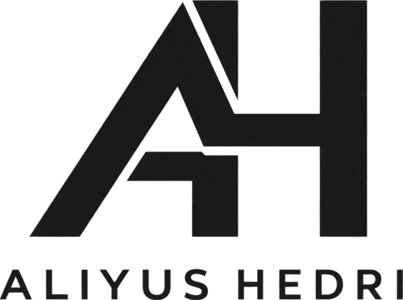
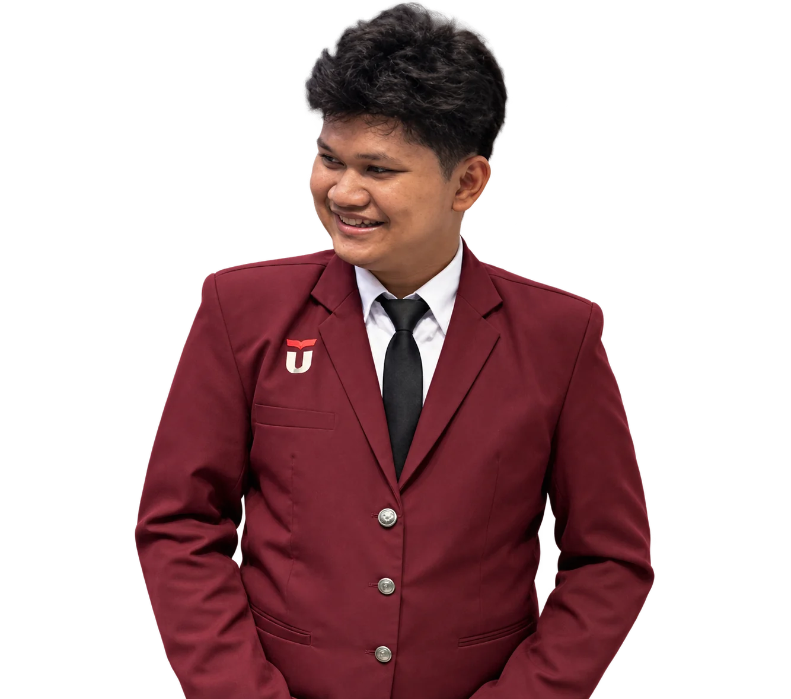
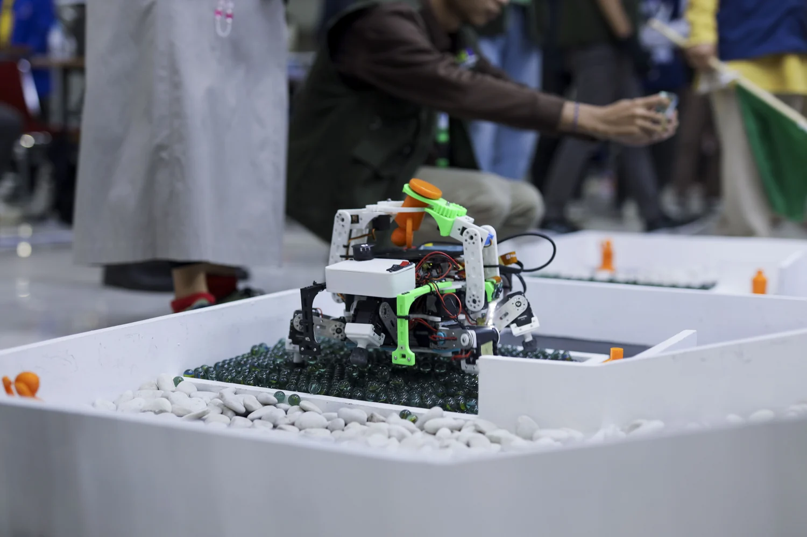
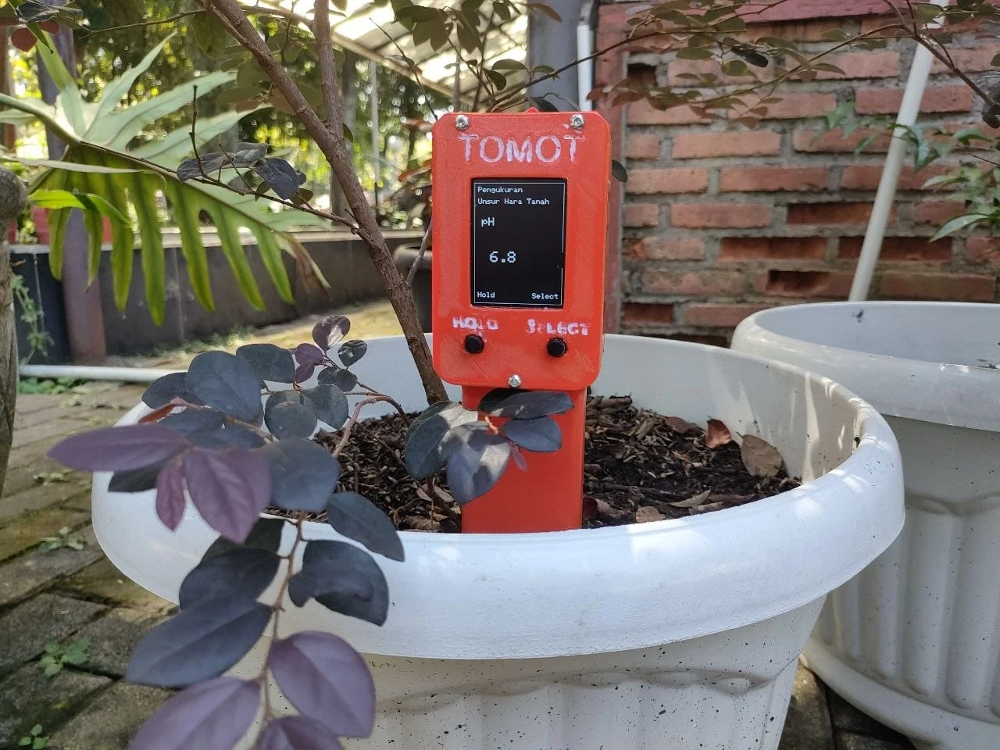
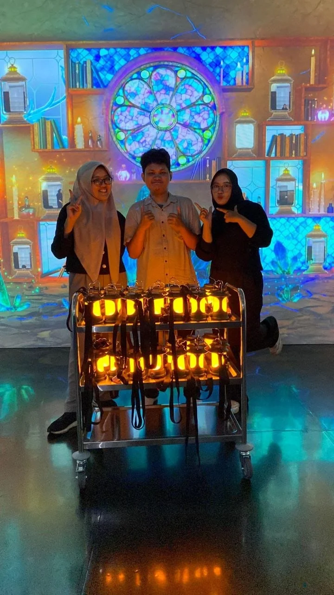
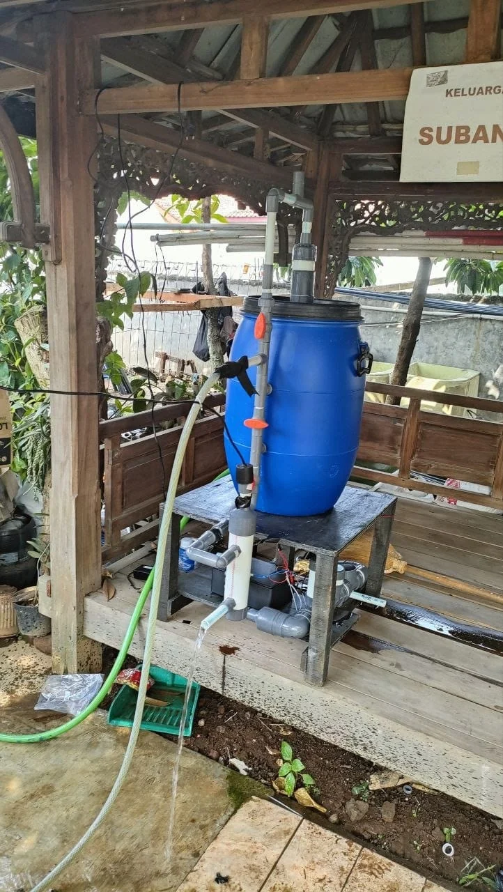
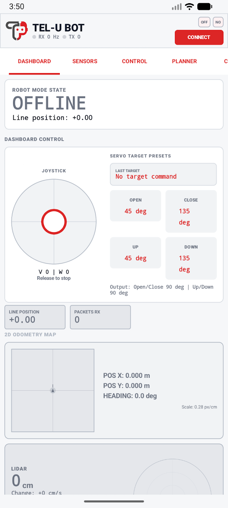
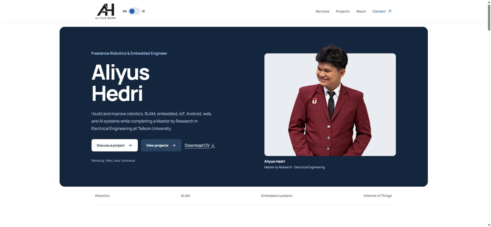

Robotics, SLAM & embedded IoT
Build or improve robot and device systems around ROS2, LiDAR, sensors, embedded boards, and connected data flows.
Typical toolsROS2 · C/C++ · Python · Arduino · ESP32 · Raspberry Pi

Freelance Robotics & Embedded Engineer
I build and improve robotics, SLAM, embedded, IoT, Android, web, and AI systems while completing a Master by Research in Electrical Engineering at Telkom University.
Bandung, West Java, Indonesia

Engineering support for individuals, small businesses, startups, companies, and research teams. I work remotely; onsite work, full projects, and debugging can be discussed.
Build or improve robot and device systems around ROS2, LiDAR, sensors, embedded boards, and connected data flows.
Typical toolsROS2 · C/C++ · Python · Arduino · ESP32 · Raspberry Pi
Turn a circuit idea into a practical board or automation flow, from schematic and layout work to embedded integration.
Typical toolsEasyEDA · EasyEDA Pro · Arduino · ESP32 · automation
Build Android apps for device control or internal workflows, and static websites for portfolios, businesses, and projects.
Typical toolsAndroid Studio · HTML · CSS · JavaScript · GitHub Pages
Integrate LLMs into automation, build Telegram bots with or without AI, and train ML/DL models for image detection and processing on embedded or standalone systems.
Typical toolsLLM integration · Telegram bots · ML/DL · computer vision
Help structure technical work, edit research papers or journal manuscripts, and prepare LaTeX documents around an agreed research scope.
Typical toolsTechnical writing · paper editing · LaTeX · research workflow
Robotics, embedded, and software projects from research, competitions, and development work.
6 projects shown

Automatic IMU-based balance and real-time YOLOv8 object detection for a six-legged robot.
View project
A portable soil monitoring stick for checking parameters used in fertilization decisions.
View project
Interactive installation work encountered during an internship at PT Arthatronic Studio Teknologi.
View project
An ESP32 prototype that sends pH, temperature, and turbidity readings to a cloud dashboard.
View project
A published Android app for controlling, monitoring, and configuring TEL-U BOT over local Wi-Fi.
View project
A bilingual static portfolio built with HTML, CSS, and JavaScript and published on GitHub Pages.
View projectShare a brief, agree the scope, then start the technical work.
We discuss the problem, current system, constraints, audience, and desired outcome.
Before implementation, we confirm the work area, interfaces, proposed deliverables, and handoff format.
Depending on the agreed scope, deliverables can include source code, design files, setup notes, documentation, a working demo, or a handoff session.
I am Aliyus Hedri, a freelance engineer and an Electrical Engineering Master by Research student at ACS Laboratory, Telkom University.
My work sits between robotics and practical software: LiDAR-inertial odometry and SLAM, embedded and IoT devices, Android tools, automation, AI, and technical research support.
I have led Team ARJUNA, developed monitoring prototypes, coordinated EIRRG, assisted in a computer laboratory, and completed a mechatronics engineering internship at PT Arthatronic Studio Teknologi.
See curriculum vitaeROS2, SLAM, sensor fusion, mobile and legged robots, YOLOv8, and OpenCV.
C/C++, ESP32, STM32, Raspberry Pi, IMU, camera, distance, and environmental sensors.
Python, MQTT, HTTP/REST API, Wi-Fi, Git, Linux, and MATLAB/Simulink.
Experience across industry, laboratory, research, and university activities.
30 Jun–9 Aug 2025
PT Arthatronic Studio Teknologi
Internship in mechatronics and interactive installations.
2024–2025
Electronics & Intelligence Robotics Research Group
Coordinator for the Electronics & Intelligence Robotics Research Group.
2023–2025
Telkom University
Computer Basics Laboratory Assistant at Telkom University.
2023
Telkom University
Committee member for Telkom University's PKKMB in 2023.
Electrical Engineering at Telkom University.
In progress
Master by Research · ACS Laboratory, Telkom University
2022–2026
Telkom University · GPA 3.8
APERTI BUMN 2022 scholarship recipient.
My current master's research focuses on LiDAR-inertial odometry and SLAM for mobile robots.
A 2026 AGV project adapts FAST-LIO to four low-cost RGB-D Kinect V1 cameras and distributes computation between an STM32 and a Mini PC on ROS2 Jazzy.
Selected competition and academic recognition.
PIMNAS 2025 participant, PKM-KI1, with TIRNARA.
Download the current curriculum vitae in English or Bahasa Indonesia.
Tell me what you are building, repairing, or researching. We can discuss the right scope and next step.